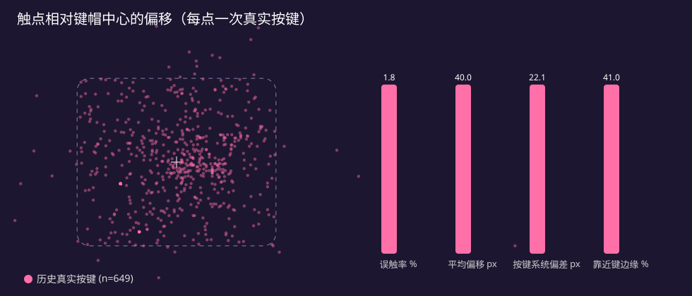

2026 江苏省 AI+科学与工程创新实践黑客松
一块触摸屏，就是一把即插即用的 USB 键盘；Agnes 读懂你的打字习惯，
实时改写键盘的样子与键位。
插上即用 · AI 个性化 · 实测数据说话
我们的答案：让 Agnes 通过设备协议（MHS）直接读写键盘，数据驱动地为每个人调出最合适的键盘。
假设：误触主要来自每个键上稳定的落点偏差；Agnes 读取统计后按偏差平移键位，可降低偏差和误触率。 方法：板上 649 次真实按键做基线；再按时间对半分，前半学习偏移、后半回放检验（留出法）。
发现：每个键平均有 22 px 的系统偏差，41% 的按键落在键边缘附近——个性化有空间；但回放显示跨会话的偏差并不稳定（一次性校准后误触率 2.1% → 3.7%，偏差仅降 7%）。 结论：校准不能"一次定终身"，应由 Agnes 按会话持续、小步地在线调整——这正是 KeyScreen 的设计方向。

| 指标 | 数值 | 说明 |
|---|---|---|
| 触摸 → USB HID 发送 | 平均 1.75 ms，p95 3.3 ms | 按下即发，与电脑打字同步 |
| 按键 → 屏幕更新（助手输入） | 中位数约 34 ms | 分区缓存 + 按键唤醒渲染 |
| 屏幕刷新耗时 | 48 → 27 ms | 定位到桌面合成器并关闭 |
| 拼音整句转换 | < 1 ms / 键 | 4.7 万词条 Viterbi + 简拼 + 自学习 |
| 稳定性 | 触摸线热插拔自恢复，systemd 守护 | systemd 开机自启，电脑端插上自动连接 |
谢谢！欢迎上手体验 KeyScreen